Khi cấp cứu nơi hoang dã, đòi hỏi các bạn phải có sự linh động, óc sáng tạo và một kiến thức đa dạng, vì ở đó, các bạn thiếu thốn mọi phương tiện, dụng cụ, thuốc men. Các bạn cũng vừa là cứu thương viên, vừa là y sĩ điều trị, cho nên trách nhiệm của các bạn nặng nề hơn.
° Chăm sóc vết thương:
Đừng để cho vết thương bị nhiễm trùng, đừng để cho ruồi bọ đậu vào, nhất là loại ruồi rừng (loại này không đẻ trứng mà đẻ trực tiếp ra ấu trùng là những con giòi, lớn rất nhanh, đục khoét vết thương của các bạn).
° Sát trùng vết thương: Rửa vết thương bằng nước đun sôi để nguội với xà phòng (nếu có).
Hay với dung dịch nấu sôi: Tô mộc + Hoàng đằng + Phèn chua + nước (nếu có thể). Hay với dung dịch: lá Trầu không còn tươi + phèn chua + nước.
Hoặc nấu nước với một trong những loại cây thuốc sau: cây Cỏ hôi, cây Sầu đâu, Chó đẻ...
Đắp tươi các cây thuốc như: Dâm bụt, Ké hoa vàng (cỏ chổi), lá Móng tay, Liên kiều, Ba chạc, lá Trầu không...
° Điều trị vết thương: bằng cách đắp một trong các cây thuốc sau:
- Lá mỏ quạ tươi, bỏ cọng, rửa sạch giã nát đắp lên. Lúc đầu, rửa (bằng các dung dịch kể trên) và thay băng hàng ngày, sau 3-5 ngày, nếu thấy vết thương đã nhẹ thì hai ngày thay băng một lần.
- Lá cây Bông ổi (cứt lợn) giã nát đắp lên, vừa cầm máu, vừa sát trùng và mau lên da. Hoặc giã nát vỏ và lá Bời lời nhớt, Tơ mành, Ké hoa vàng, Hạ khô thảo, Cải trời, Chó đẻ. Rau diếp cá, Thuốc bỏng (sống đời), Thuốc giấu, lá Thường sơn...
Khi vết thương đã sạch, đang trong giai đoạn phát triển tổ chức hạt nhưng không đều, cần bôi một trong các loại thuốc sau: Nghệ già, củ ráy (chóc), Dầu mè, Sáp ong...
Cầm máu
Khi bị một vết thương chảy máu, các bạn phải nhanh chóng tìm mọi cách làm ngưng chảy máu, để hạn chế mất máu nhiều có thể gây choáng nặng dẫn đến tử vong.
° Đứt tĩnh mạch, động mạch nhỏ hay mao quản: Trường hợp này, máu chảy tràn ra ít thì vết thương tự cầm máu. Nếu máu chảy nhiều thì hãy đắp một trong những loại thuốc sau đây rồi băng ép lại:
Giã nát và đắp lên vết thương một trong các cây thuốc sau: Thuốc bỏng (sống đời), Thuốc giấu, Bông ổi, Huyết dụ, Tam thất, Bách thảo sương (nhọ nồi), Bại hoại (móng rồng), Cà kheo (sừng hươu, sống đời lá rách), rau Cần (cải rừng tía), Củ chóc (bán hạ Nam, Ráy), Quế rành (Trèn trèn, Quế trèn), Tai hùm, Thài lài trắng, Tu hú trắng...
Giã nát và vắt nước uống các cây: nhọ nồi, nghể...
Theo kinh nghiệm dân gian, người ta còn cầm máu bằng các chất liệu như tóc, lông, mạng nhện, thuốc rê... tuy hiệu nghiệm nhưng không bằng dùng cây cẩu tích.
Cây cẩu tích:
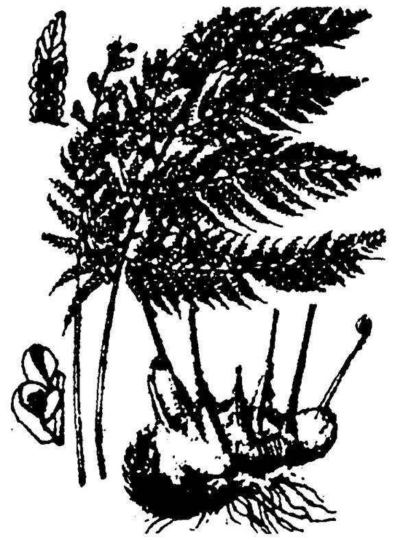
Còn gọi là cây lông cu li, kim mao cẩu tích, cẩu tồn mao, cây lông khỉ, (tên khoa học là cybotium barometz). Có nhiều ở Bạch Mã (Thừa Thiên), Đà Lạt... Các bạn hãy tìm kiếm hoặc mua một gốc cẩu tích (hình bên) rồi vặt lông tẩm cồn 90o phơi khô. Khi gặp vết thương máu ra nhiều thì lấy đắp vào vết thương rồi băng ép lại, máu sẽ cầm rất nhanh.
Cây cẩu tích sẽ ra lông trở lại nếu các bạn phun rượu trắng vào gốc rồi mang để vào nơi thoáng mát.
° Đứt động mạch quan trọng: Trường hợp máu chảy màu đỏ tươi, phun thành tia theo nhịp tim, hoặc trào mạnh ra ngoài theo vết thương. Các bạn phải nhanh chóng sử dụng một trong những biện pháp sau:
1. Ấn chặn vết thương:
Dùng những cây thuốc và vị thuốc như đã nói trước, đắp lên vết thương, rồi dùng tay, băng hay khăn sạch ấn mạnh vào vết thương. Giữ chặt cho đến khi máu ngưng chảy. Nếu máu chưa cầm được, hãy nâng cao phần bị thương lên càng cao càng tốt. Nếu cần thì buộc (hơi nhẹ) thêm ga rô.
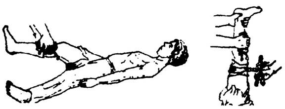
2. Ấn chặn động mạch:
Là dùng ngón tay, nắm tay ấn mạnh vào động mạch, giữa vết thương và tim. Đó là những nơi mà các động mạch chính chạy chéo trên xương. Động mạch giữa ngón tay và nền xương làm máu phải ngừng chảy. ấn chận động mạch là biện pháp cầm máu tạm thời và rất hiệu nghiệm, nhưng có nhược điểm là không thể làm lâu vì mỏi tay.
° Các điểm ấn chận động mạch: (xem hình)
- Động mạch thái dương: để cầm máu đỉnh đầu.
- Động mạch dưới mang tai: để cầm máu ở mặt.
- Động mạch cảnh ở cổ: để cầm máu vùng đầu.
- Động mạch dưới xương đòn: để cầm máu vùng nách và cánh tay.
- Động mạch cánh tay trong: để cầm máu từ vùng cẳng tay trở xuống.
- Động mạch ở háng và đùi: để cầm máu từ vùng đùi trở xuống.
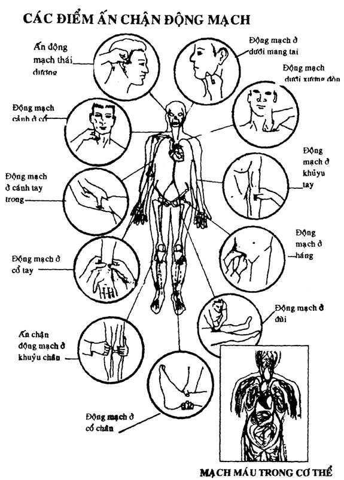
Sau khi ấn chận động mạch, các bạn nên đắp các loại thuốc cầm máu vào vết thương và băng ép lại thật chặt. Sau đó, nới tay ra từ từ, nếu thấy máu còn chảy thì lập tức ấn chặn trở lại.
Cho uống thêm bài thuốc cầm màu có 02 vị chính là:
- Tô mộc
- Nghệ vàng
Tùy theo trường hợp mà gia thêm các vị thuốc khử ứ, hoạt huyết như Tam thất, Tóc đốt, Bồ hoàng.
3. Đặt garô (garrot):
Là một phương pháp cầm máu hữu hiệu nhưng rất nguy hiểm, cần theo dõi một cách cẩn thận khi áp dụng.
Lấy một sợi dây chắc, không đàn hồi (cà vạt, khăn tay, khăn quàng...) cột một vòng quanh đùi, hay cánh tay, phía trên vết thương (giữa vết thương và tim) chừng 10cm. Dùng một cây thước kẻ hoặc một đoạn cây ngắn, nhỏ, xỏ ngang và xoắn lại. Trước khi xoắn, các bạn nên đệm vào điểm muốn nén một vật hơi cứng (viên sỏi bọc vải, khăn tay cuộn lại...) mục đích là để cho vật đó đè xuống mạch máu, khiến cho máu không lưu thông được. Các bạn xoắn cho đến khi thấy máu ngưng chảy thì dùng dây mềm cột que vào cánh tay hay đùi.
Có thể đặt ga rô với một sợi dây có tính đàn hồi (ống cao su mềm): Căng thẳng dây ra, quấn hai vòng quanh cánh tay hay chân rồi siết lại.
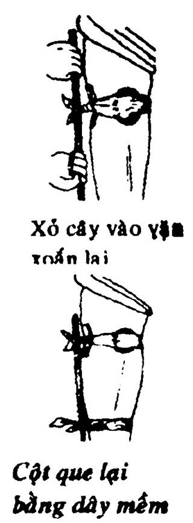
NGUYÊN TẮC ĐẶT GA RÔ:
- Đặt trên vết thương độ 10cm, lộ ra ngoài, dễ thấy.
- Đắp các loại thuốc cầm máu và sát trùng ở vết thương.
- Khoảng 15 phút thì từ từ nới lỏng ga rô một lần, nếu thấy máu còn chảy thì siết ngay lại.
GHI NHỚ: Ga rô chỉ nên dùng khi không còn biện pháp nào khác và phải chấp hành đúng quy định về ga rô, vì nếu không sẽ dẫn đến chết hoàn toàn đoạn chi đó, phải cắt bỏ.
MỘT SỐ BÀI THUỐC CẦM MÁU
BÀI SỐ 1:
Công thức: Bột sâm đại hành (không hạn chế liều lượng).
Tác dụng: Cầm máu, tiêu ứ máu, giảm sưng đau, lên da non
Thích hợp: Cầm máu động mạch và tĩnh mạch, điều trị các vết thương phần mềm.
Chế biến: Dùng củ đã cắt bỏ rễ và thân, rửa sạch, thái mỏng, phơi hay sấy thật khô, tán thành bột thật nhỏ, rây mịn, cho vào chai hoặc túi nylon thật kín để nơi khô ráo.
Cách dùng: Rắc thuốc cầm máu lên cho kín vết thương, sau khi đã sát trùng, đặt gạc hay vải sạch lên vết thương, băng ép chặt. Mỗi ngày thay thuốc một lần.
BÀI SỐ 2:
Công thức:
- Cỏ nhọ nồi (cỏ mực) sao cháy đen 100gr
- Lá chuối hột khô sao cháy đen 100gr
- Than tóc 100gr
Tác dụng: Cầm máu, tiêu sưng, sinh da non
Thích hợp: Cầm máu động mạch và tĩnh mạch, điều trị các vết thương phần mềm.
Chế biến:
- Cỏ nhọ nồi cắt bỏ rễ, rửa sạch, phơi khô, thái nhỏ, sao đen (tồn tính)
- Lá chuối hột rửa sạch, thái nhỏ, phơi khô, sao đen (tồn tính).
- Tóc rửa bằng nước bồ kết, sấy khô rồi đốt cháy thành than
Ba thứ trên liều lượng bằng nhau, tán nhỏ, rây mịn. Đựng vào chai lọ hay túi nylon hàn kín. Bảo quản nơi khô ráo.
Cách dùng: Như bài số 1.
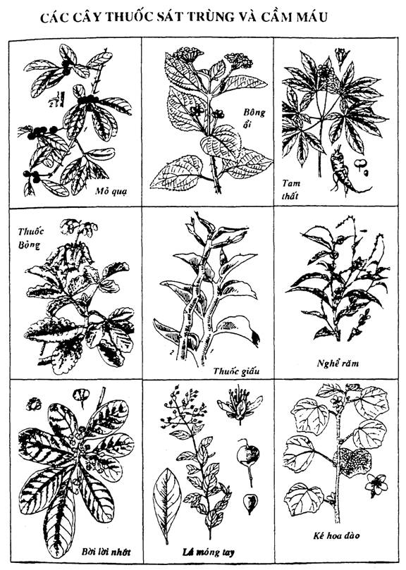
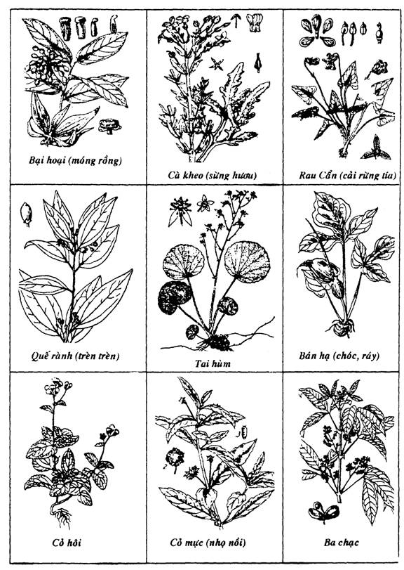
BĂNG BÓ:
Để che chở vết thương hay để cầm máu hoặc để giữ êm chỗ bị thương trong trường hợp gãy xương, chúng ta cần biết một số phương pháp băng bó.
° Cách băng bằng băng cuộn:
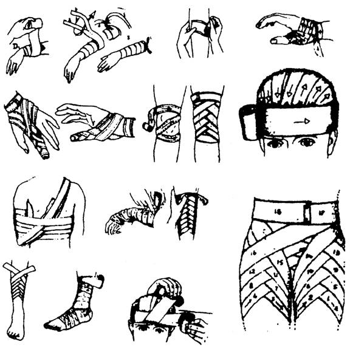
VÀI ĐIỀU CẦN LƯU Ý:
1. Với những vết thương nhẹ, cần đắp thuốc cầm máu và sát trùng rồi mới băng lại.
2. Kỹ thuật băng bó còn tùy thuộc vào phần cơ thể bị thương, với yêu cầu: kín = phải bao bọc kín vết thương. Gọn và chắc = không quá chặt khiến cho máu không lưu thông được, không sút sổ khi cử động.
3. Khi cần cầm máu, phải ép băng đủ chặt.
° Cách băng bằng loại băng tam giác:
Là loại băng vải hình tam giác vuông cân, mỗi cạnh góc vuông khoảng 80 đến 90cm. Có thể sử dụng khăn quàng, khăn vuông xếp lại, miếng vải... Dùng để băng bó, treo tay, cố định xương gãy hoặc xếp lại thành băng cà vạt.
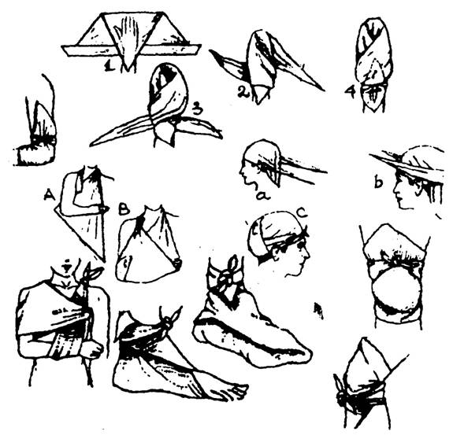
GÃY XƯƠNG:
Ở trong vùng hoang dã, nơi mà thuốc men và dụng cụ y tế thiếu thốn mà bị gãy xương thì thật là thảm họa, cho nên các bạn cần phải thật thận trọng trong lúc làm công việc, cũng như khi di chuyển, cố gắng tránh mọi trường hợp có thể dẫn đến những tai nạn, thương tích... Dĩ nhiên không ai muốn nó xảy ra, nhưng nếu có thì các bạn cũng cần bình tĩnh để tìm cách vượt qua. Các bạn hãy nhớ rằng, cho dù tình hình có tồi tệ đến đâu đi nữa, thì chúng ta cũng có thể khắc phục. Khả năng sinh học tự vệ của con người kỳ diệu hơn chúng ta tưởng rất nhiều.
Có 4 trường hợp gãy xương có thể xảy ra:
1. Nghi ngờ gãy xương.
2. Gãy xương kín
3. Gãy xương hỡ
4. Bể xương
Trong mọi trường hợp gãy xương, điều quan trọng nhất là các bạn phải làm bất động ngay tức khắc phần cơ thể có xương bị gãy. Tuy nhiên, vì các bạn đang ở nơi hoang dã, các bạn là cứu thương viên và chính các bạn cũng là y sĩ điều trị, cho nên trước khi cặp nẹp bất động phần cơ thể bị gãy, bằng trực giác, sự cảm ứng và óc phán đoán, các bạn cố gắng sắp làm sao cho hai đầu xương nối với nhau cho thật thẳng (cho dù có làm cho nạn nhân đau đớn), rồi mới băng cứng lại (nếu có vết thương rách da chảy máu, thì để trống chổ đó để xử lý).
Trong những trường hợp này, nạn nhân có thể bị choáng vì quá đau đớn. Các bạn cố gắng thao tác thật nhanh mọi công đoạn như: cố định xương gãy, băng bó sớm, cầm máu nhanh, ủ ấm chống lạnh, cho uống trà nóng, nước đường, cà phê đậm (nếu có)... đặt nằm chân cao hơn đầu, làm cho nạn nhân được tiện nghi, vui vẻ, an ủi động viên tinh thần nạn nhân. Cho nạn nhân uống những loại cây lá có tính chất an thần, gây ngủ như: Vông nem, Lạc tiên (chùm bao), Ba gạc, trái thuốc phiện khô... hay quấn lá Cà dược rồi hút như hút thuốc để giảm đau, nhưng nếu thấy có triệu chứng ngộ độc thì phải ngưng ngay.
° Làm thế nào để cố định xương gãy?
Dùng những dụng cụ có thể làm nẹp như mảnh ván, cành cây, vỏ cây... tuy nhiên, khác với cấp cứu là các bạn có thể chọn bất cứ vật gì để nẹp. Ở đây các bạn phải chọn lựa cẩn thận, vì khi đã nẹp vào rồi thì rất lâu mới được tháo ra, cho nên nẹp phải có những tiêu chuẩn sau:
- Kích cỡ phải phù hợp với phần cơ thể định nẹp.
- Chất liệu không gây dị ứng cho da của nạn nhân.
- Vật liệu phải sạch sẽ, bền chắc.
(Nếu có thể thì nên dùng vỏ cây gạo để bó chỗ xương gãy, vì vỏ cây gạo có tính chất liền xương).
Trước khi nẹp để làm bất động nơi vết gãy, các bạn hãy đệm chung quanh vết thương (nhất là những chỗ có mấu lồi của xương như mắt cá, cùi chõ, cánh tay...) bằng những vật liệu êm và sạch như bông gòn, khăn tay, áo quần, chăn mền... Làm như vậy để khi chúng ta nẹp cứng lại không làm cho nạn nhân bị đau đớn, khó chịu.
Khi bị gãy xương hở, cần phải sát trùng vết thương thật sạch trước khi kéo nắn về vị trí cũ.
CỐ ĐỊNH XƯƠNG GÃY:
° Gãy xương bàn tay hoặc khớp cổ tay:
- Đặt một cuộn băng hoặc một cuộn vải vào lòng bàn tay, sau khi sửa lại các phần xương gãy.
- Đặt một nẹp từ bàn tay đến quá cổ tay (cho hơi thừa ở đầu bàn tay).
- Đắp thuốc, dùng băng cố định bàn tay, cẳng tay vào nẹp.
- Treo cẳng tay bằng băng tam giác hay băng thường.
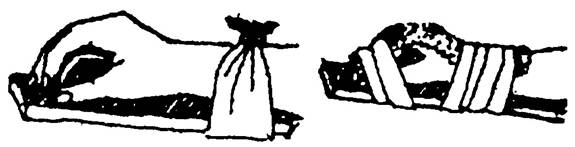
° Gãy xương cẳng chân:
Các bạn thao tác như cách làm đối với gãy xương cánh tay và cẳng tay. Khi cần thiết phải di chuyển thì phải dùng thêm một cặp nạng..
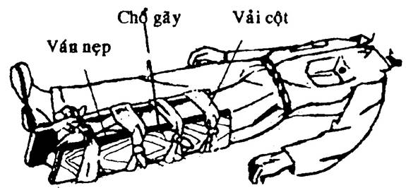
° Gãy xương cánh tay, cẳng tay:
Sau khi kéo xương vào đúng vị trí cũ, sửa cho thật thẳng, rồi đắp thuốc lên, dùng nẹp ép hai bên theo chiều dài xương, dùng băng, dây, vải, khăn... cột lại để cố định. Nếu cần thì treo tay hoặc băng ép vào người bằng băng tam giác, băng thường, mảnh vải...
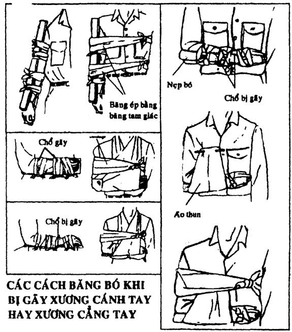
° Gãy xương đùi:
Nếu bị gãy xương đùi, đòi hỏi chúng ta phải có một sự chăm sóc đặc biệt và cẩn thận. Tuyệt đối không nên di chuyển nếu không thật cần thiết.
Trường hợp này, khi bó nẹp, chúng ta phải bó dài luôn cả phần cẳng chân như hình dưới đây.
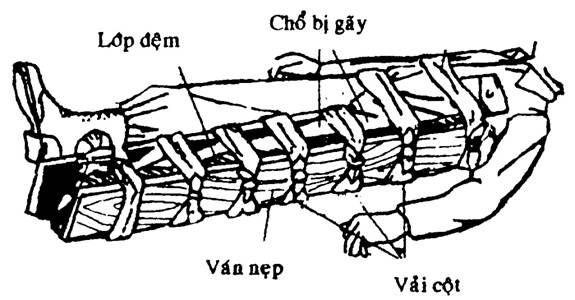
Ghi chú: Những phương pháp bó nẹp cố định xương gãy như trên, chỉ dùng tạm thời trong khi chờ di chuyển nạn nhân đến bệnh viện, nếu các bạn đang ở trong vùng hoang dã, không liên lạc được với xã hội thì sẽ dùng những phương pháp hướng dẫn sau:
NẮN LẠI CÁC XƯƠNG GÃY
Trước khi nẹp và bó thuốc để cố định đoạn xương gãy, các bạn phải tìm cách nắn lại các xương gãy (thật ra, công đoạn này là dành cho các nhà chuyên môn ở bệnh viện hay các trạm y tế, nhưng ở nơi hoang dã thì chính các bạn phải tự xoay trở lấy, cho dù đôi khi nó không được hoàn hảo lắm, nhưng còn hơn là không làm gì).
Nếu các xương có vẻ ít nhiều ở tư thế đúng, không thấy biến dạng thì tốt hơn là đừng di động chúng, cứ để yên như thế mà đắp thuốc và nẹp cố định.
Nếu các xương rõ ràng ở tư thế không đúng, chỗ gãy biến dạng... Nếu chỗ gãy còn mới, các bạn nên nắn hay kéo cho thẳng trước khi bó (tuy rất đau đớn, nhưng các bạn hãy động viên nạn nhân cố gắng chịu đựng, vì xương càng nắn sớm bao nhiêu thì càng dễ dàng và ít đau hơn bấy nhiêu).
° Làm thế nào để nắn xương cổ tay bị gãy?
Cần có 2 người để thao tác thì dễ dàng hơn. Trước tiên, các bạn dùng khăn hay vải cột lõng cánh tay nạn nhân vào một gốc cây hay một trụ cố định. Một người nắm bàn tay nạn nhân kéo mạnh và dứt khoát trong khoảng từ 5-10 phút, để các đầu xương gãy giãn ra và chạm đầu với nhau.
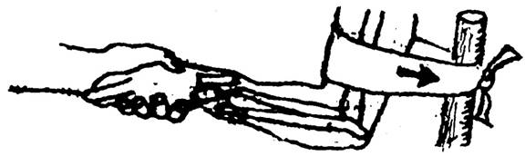
Người thứ hai nhẹ nhàng nắn lại các đầu xương cho ngay ngắn.
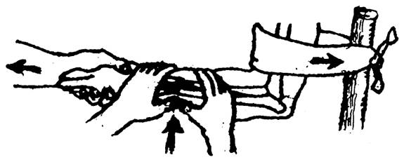
° Bao lâu thì các xương gãy liền lại?
Chỗ gãy càng nặng, nạn nhân càng già thì sự bình phục càng chậm. Trẻ em thì liền một cách nhanh chóng hơn. Xương cánh tay thì khoảng một tháng, xương cẳng chân cần giữ độ 2 tháng.
MỘT SỐ BÀI THUỐC CHỮA GÃY XƯƠNG
Có rất nhiều bài thuốc chữa gãy xương nhưng ở đây chúng tôi chỉ chọn một số bài thuốc giản dị, dễ tìm kiếm, dễ chế biến, dễ sử dụng. Có 2 loại: Thuốc bó ngoài và thuốc uống trong.
BÀI SỐ 1: Thuốc bó bột ngoài
Công thức:
- Bột củ nâu 1kg
- Cơm nếp đủ bó vết thương
Tác dụng: Hành huyết, tiêu sưng, giam đau, liền xương.
Chế biến: Củ nâu (nâu nhựa tốt hơn nâu đỏ) gọt vỏ thô, thái mỏng, phơi hoặc sấy khô, tán bột, bỏ vào chai hoặc bao nylon hàn kín, bảo quản nơi khô ráo.
Cách dùng: Cứ 100gr cơm nếp nấu hơi nát thì cho 20gr bột củ nâu, hai thứ giã đều, khi cơm còn nóng dạt thành một bánh dài đủ bó chỗ gãy, dàn thuốc lên giấy dầu hay vải gạc hoặc lá chuối, bó vào chung quanh chỗ gãy, đặt nẹp, băng cố định cho thật chặt, hai ngày thay thuốc một lần. Nếu không có bột củ nâu khô thì dùng củ nâu tươi thái mỏng, giã cho thật nhỏ, trộn với cơm nếp như trên.
BÀI SỐ 2: Lá cây thanh táo tươi
Công thức: Lá và đọt non của cây thanh táo (còn gọi là tiếp cốt thảo, trường sinh thảo)
Tác dụng: Thanh nhiệt, tiêu viêm, hành huyết, giảm đau, liền xương.
Chế biến: Lá và đọt non (bỏ cành và cuống), rửa sạch, giã nhỏ.
Cách dùng: Bỏ thuốc vào chỗ gãy, đặt nẹp, băng cố định thật chặt. Khi đã ổn định, mỗi ngày thay thuốc một lần.
BÀI SỐ 3: Vỏ cây tươi
Công thức:
- Vỏ cây gạo tươi 60%
- Vỏ cây núc nác tươi 40%
Tác dụng: thanh nhiệt, tiêu viêm, hành huyết, giảm đau. Chủ trị gãy xương, sai khớp, tụ máu, chấn thương.
Chế biến và sử dụng: Vỏ hai loại cây trên (liều lượng đủ dùng, nhưng phải theo tỉ lệ trên) lấy về gọt bỏ lớp vỏ thô bên ngoài, rửa sạch, thái mỏng, giả thật nhuyễn, bó vào chỗ gãy. Cách băng bó như các bài trên. Hai ngày thay thuốc một lần.
Ghi chú: Nếu không có vỏ núc nác thì dùng 100% vỏ cây gạo cũng rất hiệu quả.
BÀI SỐ 4: Lá cây tươi
Công thức: Lá cây tơ mành
Tác dụng: thanh nhiệt, tiêu viêm, sát trùng. Chủ trị gãy xương, chấn thương, sưng tấy, các vết thương ngoài da.
Chế biến và sử dụng: Lá cây tơ mành (còn gọi là mạng nhện, dây chỉ) hái tươi, rửa sạch, giã nát, bó như các bài trên.
BÀI SỐ 5: Thuốc rượu (thuốc uống)
Công thức:
- Nhựa cây si 50cc
- Rượu trắng 40 độ 150cc (3/5 xị)
Chủ trị: Chấn thương, gãy xương, sai khớp, tụ máu, sưng đau.
Chế biến và sử dụng: Nhựa si và rượu hòa lẫn cho tan. Người lớn uống mỗi ngày một liều, chia làm 3 lần. Thiếu niên dưới 15 tuổi uống nửa liều.
Chú ý: Nếu không có nhựa si thì dùng tua si (là những sợi từ trên cành rũ xuống), cắt khoảng 100gr tua còn non cho vào ấm nước đun sôi thật kỹ rồi hòa với rượu uống lúc còn ấm.
BÀI SỐ 6: Thuốc sắc
Công thức:
- Củ nghệ già 20gr
- Vỏ cây gạo 20gr
- Rễ cỏ xước 15gr
- Rễ lá lốt 15gr
Chủ trị: Gãy xương, bong gân, sai khớp, sưng đau, chủ yếu dùng khi tổn thương 2 chi dưới.
Chế biến và sử dụng:
- Củ nghệ thái mỏng, phơi khô, sao qua
- Vỏ cây gạo gọt bỏ vỏ thô, thái mỏng, sao qua
- Rễ cỏ xước và lá lốt rửa sạch, thái ngắn, không sao.
Cho tất cả vào ấm, sắc 2 nước, mỗi lần đổ 3 chén nước sắc, còn một chén. Hai nước hòa lại chia làm 3 lần uống trong ngày. Mỗi ngày uống một thang. Khi uống có thể pha thêm rượu càng tốt.
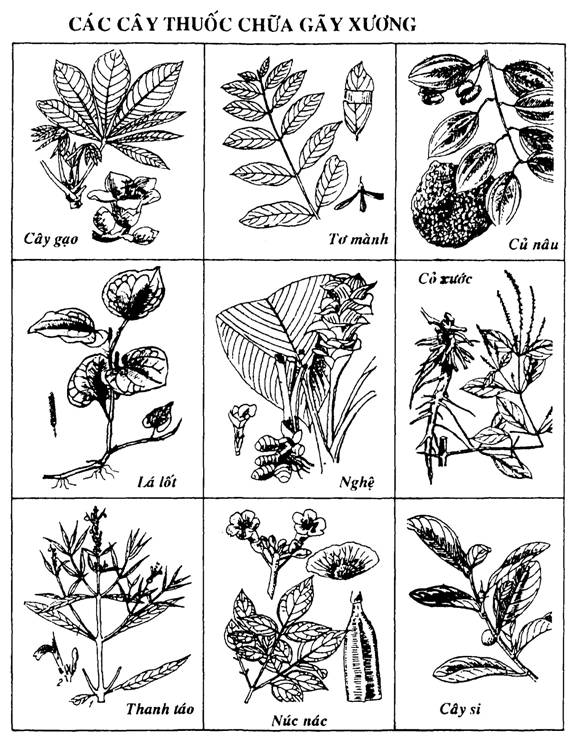
CHẤN THƯƠNG SAI KHỚP
Khi bị va chạm hay chấn thương mạnh bất thường làm cho đầu xương trật ra khỏi ổ khớp một phần hay toàn bộ, làm cho khớp không hoạt động được.
Khi bị sai khớp, bao khớp có thể bị rách nhiều hay ít, dây chằng bị đứt, rách hoặc bong ra, các cơ và mạch máu ở vùng ổ khớp cũng bị tổn thương.
° Triệu chứng:
- Đau nhức liên tục, lúc đầu đau nhiều, về sau lần lần đau ê ẩm, khi chạm vào khớp thì đau dữ dội.
- Không thể cử động được hoặc cử động khó khăn.
- Ổ khớp biến dạng, sờ thấy đầu xương bật ra ngoài ổ khớp...
- Chung quanh sưng vù, tím bầm...
° Điều trị: Nên tìm cách điều trị ngay, để càng lâu càng khó khăn. Chủ yếu là phải dùng phương pháp nắn đưa ngay đầu xương trở lại ổ khớp và bó thuốc tiêu sưng, giảm đau và cố định khớp.
Tránh dùng sức mạnh ở khớp xương đó một thời gian đủ để cho khớp khỏi hẳn.
CÁC PHƯƠNG PHÁP NẮN SAI KHỚP
1. Nắn sai khớp xương cổ:
Để nạn nhân ngồi thẳng đầu, người cứu thương đứng phía sau, hơi rùn xuống. Hai đầu gối áp chặt vào hai cạnh sườn để giữ chắc nạn nhân. Hai tay ôm đầu nạn nhân nâng lên và xoay đi xoay lại nhè nhẹ và lựa chiều xoay mạnh đưa vào khớp.
2. Nắn sai khớp xương vai:
Để nạn nhân nằm ngửa dưới đất, người cứu thương nằm xuống bên cạnh nạn nhân (phía bị sai khớp). Để gót chân của bạn vào nách nạn nhân làm điểm tựa và hai tay kéo mạnh tay nạn nhân với một lực đều đặn trong vòng từ 5-10 phút. Sau đó bỏ chân ra và khép cánh tay vào người của họ, nếu nghe một tiếng “cụp” là xương đã vào ổ khớp. Tiến hành bó thuốc và băng cố định.
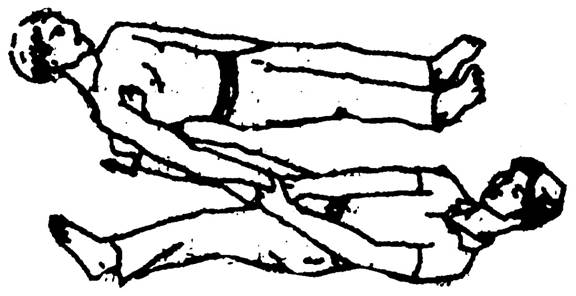
Sau khi khớp vai đã vào vị trí, nên bó cánh tay chặt vào chân. Giữ như vậy trong một tháng cho khớp không trật lại một lần nữa. Để để phòng khớp vai bị liệt cơ, mỗi ngày nên tháo ra vài lần, mỗi lần vài phút. Khi tháo ra, nên khẽ di động cánh tay nhẹ nhàng theo những vòng tròn hẹp.
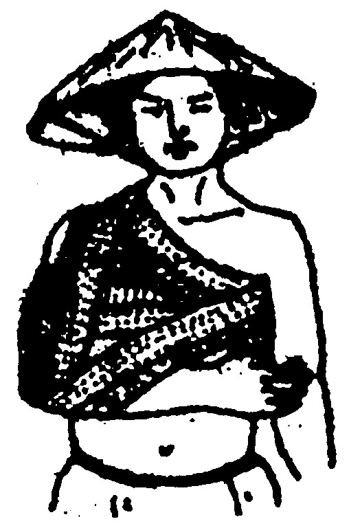
3. Nắn sai khớp xương khủy tay:
Để nạn nhân nằm dưới đất, dùng một cái khăn hay miếng vải cột ở giữa cánh tay bị sai khớp, giao cho một người kéo lại hoặc buộc vào một gốc cọc.
Cần 2 người để thao tác: người phụ dùng tay phải nắm ngón tay cái, tay trái nắm 3 ngón giữa của nạn nhân, vừa kéo xuống vừa đưa dần khuỷu gấp vào thành góc 90o.
Người nắn ở phía sau khuỷu, dùng 2 ngón tay ấn trực tiếp vào mỏm khuỷu, vừa ấn xuống dưới vừa đẩy ra phía trước, đồng thời các ngón tay giữa ấn vào phía trước, kéo dần đầu dưới xương cánh tay ra sau đưa vào ổ khớp.
4. Nắn sai khớp xương cổ tay:
Để nạn nhân ngồi đặt tay lên bàn, một người ngồi phía sau nạn nhân, hai tay nắm chặt cổ tay nạn nhân vừa kéo về phía sau vừa kềm cứng. Người nắn nắm bàn tay vừa kéo vừa lựa chiều đưa vào khớp rồi bó thuốc, băng cố định.
Các khớp khác như háng, đầu gối, cổ chân... phương pháp nắn cũng tương tự như trên, các bạn nên linh động mà thao tác.
Trường hợp bị sai khớp xương hay bong gân ở cổ chân, nếu cần đi lại, các bạn hãy sử dụng một đoạn tre một đầu có mắt, cắt theo hình bên để làm nẹp cố định, giúp đi lại mà không làm thương tổn thêm (nên đi kèm theo nạng)
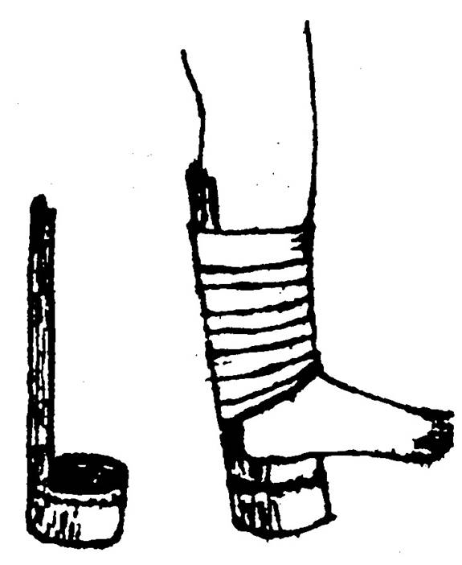
CÁC BÀI THUỐC TRỊ SAI KHỚP VÀ BONG GÂN
Bong gân cũng là thương tổn do chấn thương mạnh trực tiếp hay gián tiếp vào khớp, nhưng không làm sai khớp hay gãy xương, mà chỉ có thương tổn các bao hoạt dịch, bao khớp và các dây chằng.
Triệu chứng: Chủ yếu là sưng đau, bầm tím, cử động hạn chế.
Các bài thuốc bó ngoài dùng để điều trị gãy xương đều có thể dùng cho bong gân hoặc sai khớp.
Kinh nghiệm về điều trị chấn thương, sai khớp, bong gân thì khá phong phú. Chúng tôi đưa ra một vài bài đơn giản.
Bài số 1: Lá hay quả cây Ngái tươi
Chế biến và sử dụng: Quả hay lá cây Ngái liều lượng vừa đủ dùng, rửa sạch, giã nhỏ, cho ít rượu vào, sao chín, đổ ra vải xô, túm lại chườm vào chỗ đau (chú ý chườm nhanh tay để khỏi bị phỏng). Khi nguội đem ra sao lại cho nóng rồi chườm tiếp. Làm đi làm lại vài ba lần. Sau đó, khi thuốc còn ấm thì dàn mỏng bó vào chỗ sưng, băng cố định. Mỗi ngày thay thuốc một lần.
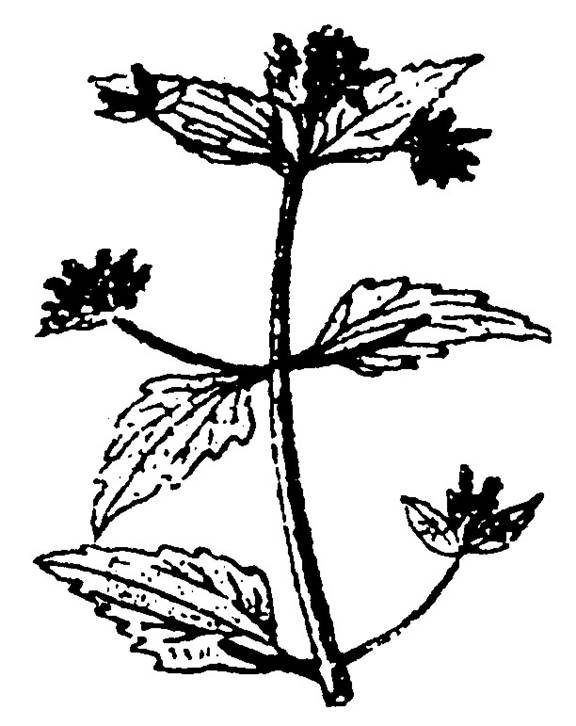
Bài số 2: Cây Bớp bớp
Chế biến và sử dụng: Dùng đọt non và lá rửa sạch, giã nhỏ, đem sao chín rồi cũng chườm và đồ như bài số 1. Mỗi ngày thay thuốc một lần.
ĐIỀU TRỊ MỘT SỐ BỆNH THÔNG THƯỜNG
Người ta có thể chữa hầu hết các bệnh thông thường lúc mới phát sinh bằng một toa thuốc duy nhất gọi là:
TOA CĂN BẢN:
Gồm 10 vị thuốc
1 - Rễ cỏ tranh 8g
2 - Rau má 8g
3 - Cỏ mực 8g
4 - Cỏ mần chầu 8g
5 - Cam thảo đất 8g
6 - Ké đầu ngựa 8g
7 - Lá muồng trâu 4g
8 - Củ sả 4g
9 - Vỏ quít 4g
10 - Gừng tươi 3 lát
10 vị thuốc trên rất dễ tìm kiếm, tuy nhiên nếu không có, chúng ta có thể thay thế một số vị mà hiệu quả vẫn không thay đổi.
Thí dụ:
- Nếu không có Muồng trâu, các bạn có thể thay thế bằng vỏ cây Bông sứ, hạt Bìm bìm, cây Chút chít
- Nếu không có Rễ tranh, có thể dùng Mã đề, Râu bắp, vỏ trái Cau, Dứa dại, Trạch tả.
- Nếu không có Rau má, có thể thay thế Râu mèo, Actisô, Nhân trần, Dành dành, Mướp, Cúc tần.
- Nếu không có Cỏ mực, có thể dùng Huyết kê đằng, Sâm đại hành, lá Huyết dụ.
- Nếu không có Cam thảo đất thì dùng Cam thảo dây, Mía.
- Nếu thiếu cỏ mần chầu thì thay bằng lá Dâu tằm, Dây kim ngân.
- Nếu thiếu Ké đầu ngựa thì dùng Ké hoa đào, Ké hoa vàng, Ô rô nước
- Nếu thiếu vỏ Quýt thì thay bằng vỏ Cam, vỏ Chanh, vỏ Bưởi.
- Nếu thiếu củ Gừng thì dùng củ Riềng
- Nếu thiếu củ Sả thì dùng củ Bồ bồ (Xương bồ).
Tất cả các vị trên tổng cộng khoảng 60g. Cho thêm vào khoảng hơn một lít nước, đun sôi trên lửa cho đến khi còn lại chừng một chén rưỡi nước thì rót ra chia làm 3 phần, uống vào sáng, trưa, và chiều tối, mỗi lần uống một phần.
Toa căn bản là một đơn thuốc gốc, dùng làm nền tảng, rồi thêm hay bớt vị hoặc liều lượng là tùy theo những triệu chứng của bệnh nhân cũng như kinh nghiệm của người thầy thuốc.
PHƯƠNG PHÁP ĐÁNH GIÓ
Khi mà các phương tiện vật chất cũng như thuốc men thiếu thốn như trong các vùng hoang dã, thì có lẽ đánh gió là phương pháp chữa bệnh khả thi và hiệu quả nhất. Đánh gió đúng cách, các bạn có thể chữa trị các bệnh thông thường như: trúng gió, cảm nắng, cảm lạnh, ói mửa, tiêu chảy, đau nhức, mệt mỏi...
° Kỹ thuật:
- Đánh nóng từ một chỗ rồi loang dần theo hệ thống thần kinh như là gáy, đầu, ngang hai vai: Trị sổ mũi, làm cho cổ họng giảm bớt buồn nôn.
- Đánh gió khoảng giữa sống lưng: Làm giảm đau bao tử.
- Đánh từ lưng quần xuống xương khu: Làm bớt đau bụng tiêu chảy, bớt đau bụng quặn.
- Áp dụng cho những trẻ em có triệu chứng: quấy phá, khó chịu, chân tay lạnh, mất ngủ, ăn không tiêu, đau bụng, khóc dai dẳng hàng giờ, toát mồ hôi lạnh... (nhưng không được đánh gió khi nghi ngờ trẻ bị sốt xuất huyết).
° Phương pháp:
- Chỗ đánh gió: thoáng mát nhưng không lộng gió
- Tư thế: Nằm sấp, vén áo (không cần cởi)
- Dụng cụ: dầu cù là, dầu nóng, lát gừng
- Cách đánh: Lúc đầu là nhẹ trên mặt da, rồi càng lúc càng mạnh dần (nhưng không nên làm đau), xoa nhẹ khắp lưng, vuốt mạnh hai bên sống lưng, băm băm dài theo xương sống, cuối cùng xoa nhẹ khắp lưng, thời gian từ 5-10 phút (trung bình là 10 phút, nếu ngắn hơn thì ít kết quả, nếu lâu hơn thì cũng tốt).
° Lưu ý:
- Người đánh gió nên nhớ rằng: nếu đánh gió để chữa các chứng bệnh thì làm sao cho người bệnh phải đổ mồ hơi thì mới khỏe được.
- Nên dùng gừng để đánh gió hơn là cù là hoặc dầu nóng. Gừng cắt mặt dập thớ (cắt ngang) để nước gừng thấm vào da. Gừng gây nóng dịu, sâu, kéo dài...
Dầu nóng thì nên dùng dầu tinh chất bạc hà.
Sau khi đánh gió xong thì phải uống thêm thuốc thích hợp với chứng bệnh, uống đúng liều lượng với một ly nước giải cảm.
CÁC CÂY THUỐC DỄ TÌM ĐỂ CHỮA CÁC BỆNH THÔNG THƯỜNG
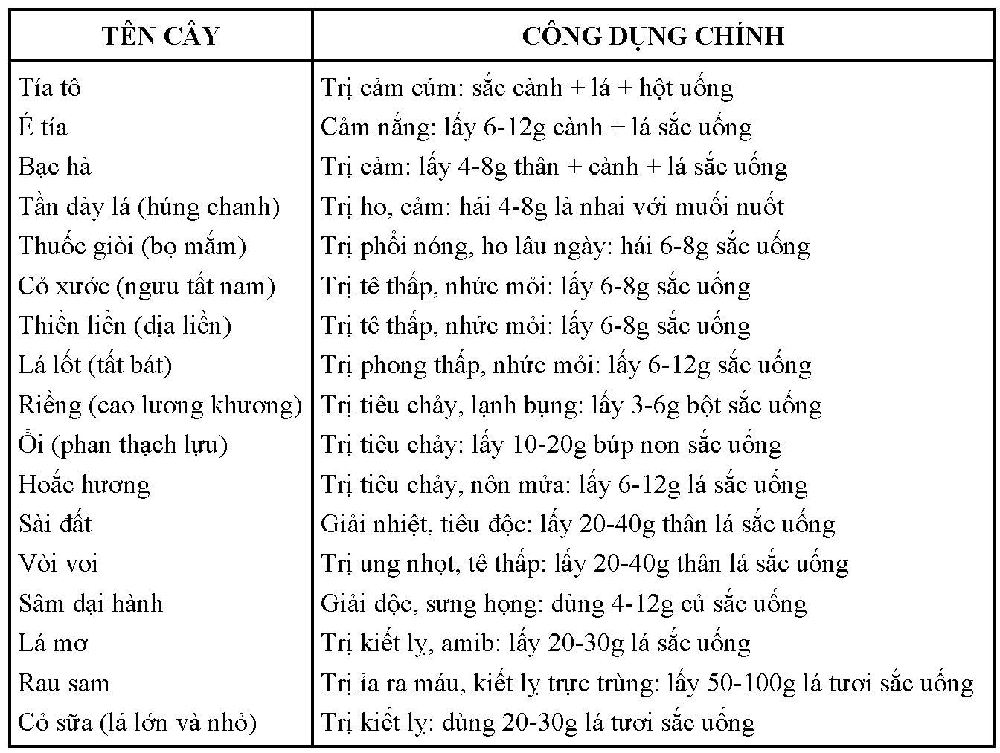